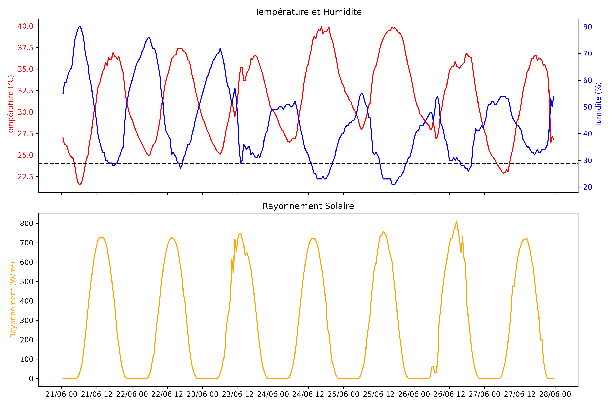

Vulgarisation Scientifique
Canicule d'extérieur 22-25 juin 2026
Publié par Joshua Piñas, le 3 juin 2026 à Paris.
Entre le 22 et le 25 juin 2026, la France métropolitaine a connu une période de fortes chaleurs. Il s'agit d'un épisode particulier où les températures sont restées élevées tout au long de la journée, y compris durant la nuit (> 24 °C), battant ainsi plusieurs records.

Le rayonnement solaire (horizontal) est resté très intense (pics de 800 W/m²), impactant directement les parois des bâtiments. Une partie de cette énergie est réfléchie, tandis que le reste est absorbé, stocké, puis transmis par conduction vers l'intérieur. Ce transfert dépend des propriétés thermiques des matériaux et de la gestion du bâtiment.
Lorsque le rayonnement frappe les surfaces vitrées, l'énergie pénètre presque instantanément. Elle est alors redistribuée entre l'air intérieur, les parois, le mobilier et les occupants, selon des lois physiques complexes et non linéaires.
Comment limiter l'impact thermique ?
Le bâtiment étant un système physique, les occupants peuvent agir sur leur environnement pour en atténuer les effets :
- Gestion des apports solaires : L'utilisation de stores extérieurs en journée permet de limiter l'énergie solaire entrante par les vitrages.
- Rafraîchissement naturel : Ouvrir les fenêtres lorsque l'air extérieur est plus frais que l'air intérieur crée une circulation d'air permettant d'évacuer la chaleur accumulée.
- Rafraîchissement par évaporation : Arroser les parois extérieures et les vitres / balcons permet d'abaisser la température des surfaces par évaporation de l'eau, limitant ainsi le transfert de chaleur vers l'intérieur.
- Usage des ventilateurs : Ils déplacent l'air et facilitent l'évaporation de la sueur sur la peau. Toutefois, leur efficacité diminue au-delà de 35 °C, et leur moteur dégage une légère chaleur résiduelle dans la pièce.
- Adaptation comportementale : En cas de chaleur persistante, il est conseillé d'occuper les pièces les plus fraîches, d'humidifier le linge de lit ou d'adapter son alimentation (repas légers, hydratation eau/sel/citron).
- Solutions passives : Pour éviter le recours aux climatiseurs portables (énergivores et peu écologiques), des études de rénovation thermique sont recommandées.
Lorsque toutes les autres mesures échouent, il est parfois nécessaire de chercher un lieu de repli climatisé ou plus frais pour passer la nuit.
Prévention pour les établissements recevant du public
Ces recommandations peuvent s'appliquer aux maisons individuels et logements collectifs. Pour les bâtiments publics (écoles, hôpitaux, etc.), des plans de prévention spécifiques sont indispensables pour protéger les personnes vulnérables, comme les enfants ou les personnes âgées, dont le système de régulation thermique (hypothalamus) est souvent moins efficace.
Enfin, bien que nous ayons mis l'accent sur la température et le rayonnement, n'oublions pas que l'humidité joue également un rôle déterminant dans notre confort thermique.
Un article scientifique, dans lequel je définis ce qu'est une canicule d'intérieur, est disponible en libre accès.